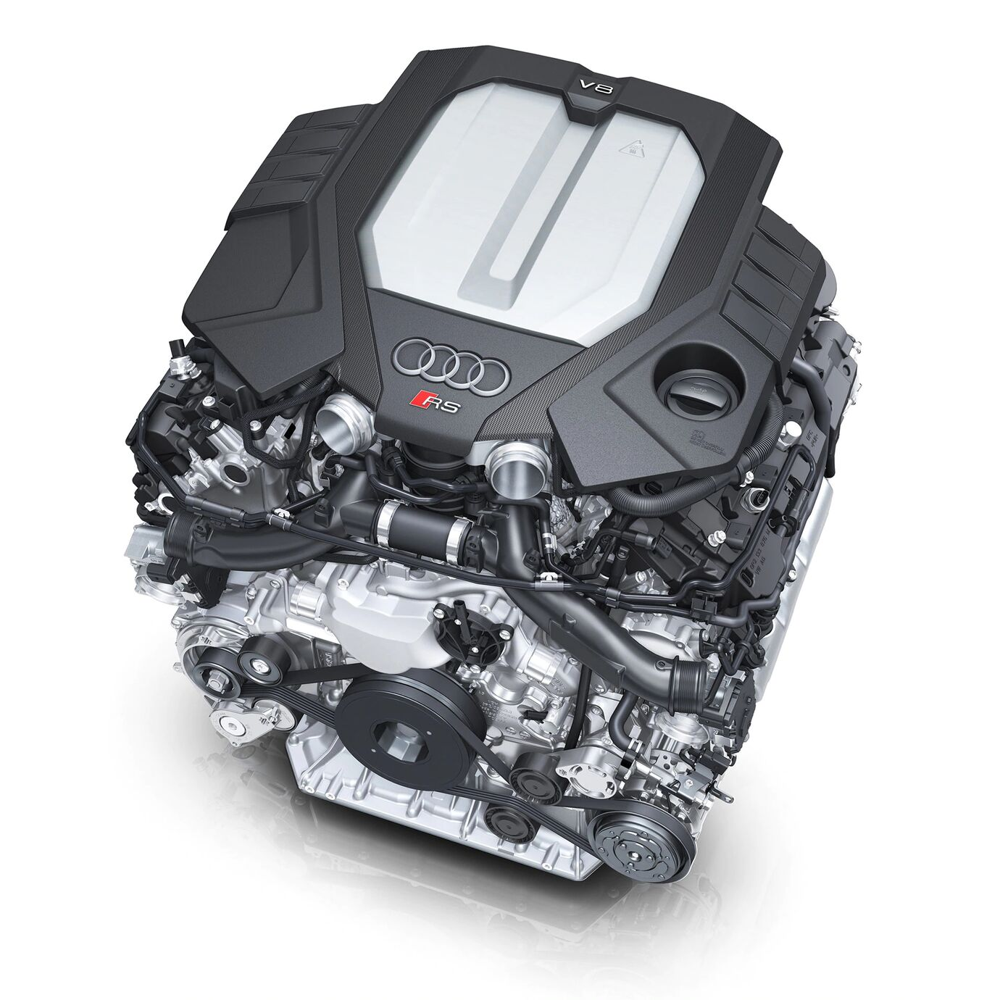

Audi RS 7
Vad és zabolázatlan vagy egyéni és esztétikus? Az Audi RS 7 Sportback formájában már meg
is született a döntés - mindkettő. Ahol a kupékat idézően elegáns, Tangóvörös dizájnvonalak a V8-as
TFSI-motor brutális erejével, az innovatív technika pedig intuitív dinamikával találkozik - élvezze,
milyen vonzó, amikor egyszerűen nem kell kompromisszumot kötnie.

Áttekintés-Külső
Sportos tetővonalával az Audi RS 7 Sportback mindenkor megéri az alapos szemrevételezést. Széles vállöv,
ragyogó "tekintet", vad egyéniség: a markáns formavilág minden pillanatban és minden részletében
meggyőző. A jellegzetes RS-szélesítés, a LED-technikájú fénysáv és a széles Singleframe hűtőrács
egyaránt a kiemelkedő teljesítmény jól látható jelei.
Amikor csak felmordul a motor, újra és újra megjelenik - a vágy az útra. Nos, az Audi RS 7 Sportback
menetteljesítményei ismeretében ez több mint érthető: a 441 kW (600 LE) teljesítménnyel és a 800
newtonméter maximális forgatónyomatékkal Ön álló helyzetből mindössze 3,6 másodperc alatt gyorsíthat fel
100 kilométer/órás tempóra (üzemanyag-fogyasztás, kombinált: 11,4-11,6 l/100 km; szén-dioxid-kibocsátás,
kombinált: 261-265 g/km), majd tovább, opcióként akár 305 kilométer/óráig. Mindezt a 4,0 literes, V8-as
biturbo-motor teszi lehetővé, amely 48-voltos mild-hibrid rendszerének és cylinder on demand
technikájának köszönhetően csaknem minden szituációban kiválóan alkalmazható és minden
sebességtartományban több mint elegendő teljesítménnyel szolgál.
Az extrafelszerelésként kínált Audi RS-Matrix-LED lézerfényszórók formájában döntsön Ön is a progresszív
világítástechnika mellett! A fejlett LED- és kameratechnika alkotta, intelligens rendszer egyszerre
gondoskodik fokozott biztonságról és nagyszerű megjelenésről, mégpedig a karakteres hátsó LED-fénysáv és
a dinamikus irányjelzők az Audi RS 7 Sportback nyitásakor és zárásakor lefutó RS-animációjával.
Áttekintés-Belső
Vérpezsdítő élményeinkről mi magunk gondoskodhatunk a legjobban - ami az Audi RS 7 Sportback esetében
már az Audi virtual cockpit RS-Performance dizájn szerinti kijelzőfelületére pillantva sikerül. Még
intenzívebb e bizsergés, amint megmarkolja az alumínium RS-sebességváltó-kapcsolóbillentyűkkel
kiegészített, bőrbevonatú RS-sportkontúr kormánykereket. Az új RS-üzemmódkapcsolóval egyszerű
gombnyomásra hívhatja le bármikor a személyre szólóan konfigurált RS1 és RS2 üzemmódokat.
Az Audi RS 7 Sportback révén bárhol sikerülhet Önnek ez a "mutatvány", például a perforált Valcona
bőrrel borított és vörös méhsejtmintázatú steppeléssel varrott, a támláikon pedig RS nyomattal díszített
RS-sportülésekkel vagy épp a hátsó üléseknél is vörös szegélyű biztonsági övekkel. A tágas beltérnek
köszönhetően igény szerint családja, barátai is élvezhetik e tömény és esztétikus sportosságot: akár
ötödmagával is hátat fordíthat a mindennapoknak - s igencsak sportosan hagyhatja őket maga mögött.